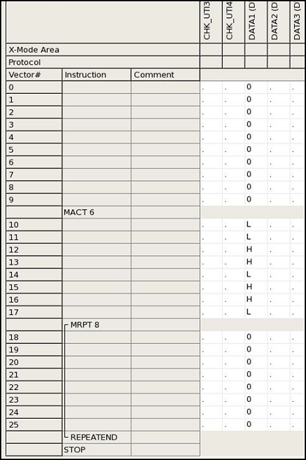

Creating a match loop pattern from logical data
This topic describes how to add a sync marker. A pattern attached with the markers becomes a 'control pattern'.
The following code is an example for creating a match loop pattern from logical data.
rdi.smartVec().pin("DATA1").defaultBit(0)
.matchData(0x36,8,10,6)
.matchCycle(8)
.execute();The following screenshot window shows the result.

Functional changes
- Introduced in SmartRDI 2.4.0